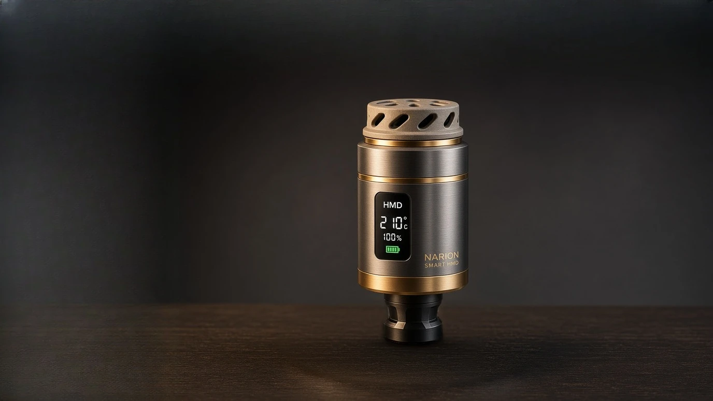
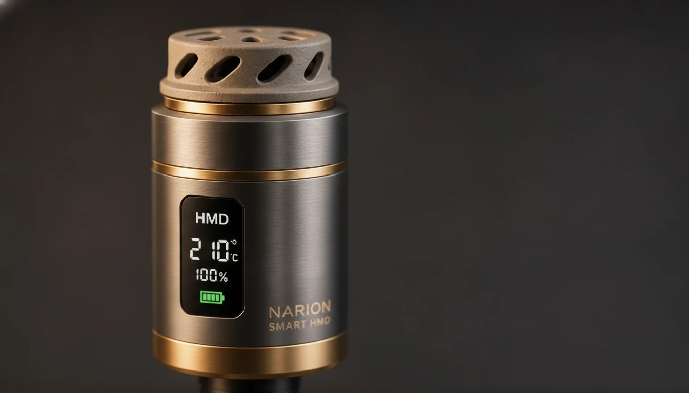
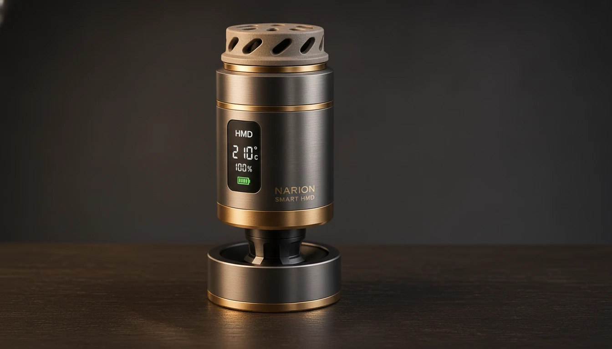

Без угля. Без проводов.
Чистый вкус настоящего табака.
Головная боль и угарный газ при курении кальяна возникают не от табачного листа, а от тлеющего сверху угля. NARION Smart HMD заменяет огонь пищевой керамикой Al₂O₃, модульной батареей 74 Вт·ч и точным ПИД-контролем ±1 °C.
Шестислойная тепловая архитектура
и живая телеметрия нагрева
Выточенное на 5-осевых станках с ЧПУ в Стамбуле шасси из авиационного алюминия EN AW-6061-T6 физически изолирует аккумулятор и электронику от жара и потока дыма.




Термостойкая техническая керамика и управление без приложений
Встроенный OLED-экран показывает точную температуру, заряд и режим прямо на корпусе.
90–110 минут автономной работы и замена Hot-Swap за 5 секунд
Высокотоковая сборка (45 А) с платой BMS 30 А; верхний картридж меняется за холодное кольцо за 5 секунд.
Динамический Draw Boost +15% и отсечка за 200 мс при наклоне
MEMS-датчик мгновенно компенсирует охлаждение воздухом при затяжке, а 6-осевой гироскоп отключает нагрев при наклоне >35°.
Холодный внешний корпус и посадка на любые чаши и шахты
Внешняя стенка остаётся холоднее 42 °C, а база садится как на классические чаши phunnel (Ø67.5 мм), так и на капсулы Ø64 мм.
Реальное время прогрева: почему 3,5 – 4,5 минуты?
Открытая тонкая спираль раскаляется за минуту, но пережигает верхний слой табака. Равномерный прогрев керамического диска Al₂O₃ (Ø57.8×5 мм), тепловой базы 6061-T6 (теплоёмкость 21,8 кДж) и 15 г влажного табака без пригорания занимает 3,5 – 4,5 минуты — в 3 раза быстрее розжига угля на плитке (12–15 мин) с густым мягким дымом с первой затяжки.
Ваш любимый табак, ваш привычный кальян —
без угля, фольги и щипцов.
Без плитки для угля и пепла: снимите с дока, поверните и курите
Снимите заряженный модуль с настольной станции 65W USB-C PD, зафиксируйте четверть-оборотом 45° на хрустальном кальяне NARION YALIN или своём кальяне и выберите температуру. Густой мягкий пар в гостиной без запаха розжига, искр и с 0.0 ppm CO.
Забейте чашу или под (12–18 г)
Уложите Blonde Leaf, Dark Leaf или бестабачную смесь в съёмный под Ø64 мм или свою чашу phunnel без фольги.
Установите с магнитным замком
Поставьте на любой классический кальян через комплектные силиконовые адаптеры или на байонет 45° NARION с магнитом SmCo.
Выберите градус на OLED
Задайте 150–240 °C поворотом кольца на встроенном OLED-экране 0.96" или через веб-интерфейс по QR-коду.
3,5–4,5 мин прогрева и 90+ мин
Зелёное кольцо сигнализирует готовность к 90–110 минутам сессии; второй картридж 74 Вт·ч ставится за 5 секунд.
Профиль Blonde Leaf — светлый лист (185°C – 205°C)
Воздушная забивка 12–15 г (2 мм ниже края), мягкий прогрев ~3,5 мин при 210 °C и стабильное удержание 195 °C без перегрева сахаров.
Профиль Dark Leaf — тёмный лист Burley (215°C – 235°C)
Полуплотная забивка 14–18 г, глубокий прогрев 4,0–4,5 мин при 235 °C и рабочая полка 225 °C с мгновенным подхватом +15% Draw Boost при тяге.
Чайные и растительные смеси без никотина (175°C – 190°C)
Деликатное испарение глицерина на 180 °C: 0% никотина, 0.0 ppm CO и полное отсутствие запаха гари в гостиной или отеле.
Равномерный прогрев чаши (3,5–4,5 мин); рост °C виден на OLED.
ПИД-температура (±1 °C) достигнута, кальян готов к курению.
Сработал датчик затяжки Sensirion SDP31 (+15% мощности).
Заряд <10% (пора сменить картридж за 5 сек) или защита IMU.
Тяжёлый угарный газ в кальяне идёт от горящего угля, а не от табака
Лабораторные замеры показывают: пик никотина в крови почти равен одной сигарете (≈1×), но охлаждённый водой дым вдыхается в 48 раз большим объёмом, давая 9-кратный рост CO в выдохе и 3-кратный рост COHb в крови из-за тления угля. В NARION угля нет вовсе — 0.0 ppm CO.
| Инженерный параметр | NARION Smart HMD (NRN-HMD-TF-002 R2.0) | Импортные E-HMD (класс $399) | Традиционная чаша с углём |
|---|---|---|---|
| Габариты и шасси | Ø72.5 × 134.5 мм • ЧПУ 6061-T6 Тип III + крышка из кордиерита | Тяжёлый цинковый сплав (~1150 г) | Открытый жар 450 °C и пепел |
| Нагреватель и выброс CO | Пищевая керамика Al₂O₃ MCH (90W / 150W) • 0.0 ppm CO | Спиральный нагреватель • 0 ppm CO | 1200 – 1800 ppm токсичного CO |
| Время прогрева (Pre-Heat) | 3,5 – 4,5 минуты равномерного прогрева без пригорания | ~5 – 7 минут ожидания | 12 – 15 минут на плитке розжига |
| Аккумулятор и док-станция | 4S Samsung 21700-50S (74 Вт·ч) + док 65W Pogo-Pin + смена 5 сек | 5000 мА·ч (~36 Вт·ч) + кабель | Замена углей каждые 20 минут |
| Теплозащита и безопасность | Nano-Aerogel (корпус < 42 °C) + 6-осевой IMU (отсечка за 200 мс) | Стандартная изоляция без датчика тяги | Риск прожечь ковёр и мебель |
Что в коробке и мойка за 2 минуты
- 1×Корпус Smart HMD R2.0 (6061-T6 + OLED 0.96")
- 2×Силовых картриджа 74 Вт·ч (180–220 мин суммарно)
- 1×Настольная док-станция 65W USB-C PD Pogo-Pin
- 2×Чаши/поды Ø64 мм + универсальные силиконовые адаптеры
Безопасная промывка водой: отсоедините верхний электронный модуль в четверть оборота и спокойно промойте нижнюю табачную чашу под тёплой водой.
Коротко о главном
Внутрь заливается жидкость или закладывается обычный табак?
Подойдёт ли устройство к моему обычному кальяну?
Нагревается ли внешний корпус и что будет при падении кальяна?
Управляйте нагревом на столе со смартфона
Отсканируйте QR-код на Smart HMD телефоном. Откроется веб-интерфейс — без установки приложения, — где вы выберете нужный профиль подачи.
Режим Soft (190 °C)
Максимальная отдача вкуса на низкой температуре — для деликатных цветочных и фруктовых смесей.
Режим Medium (215 °C)
Плотный белый дым и сбалансированная насыщенность вкуса — для классических табаков.
Режим Hard (235 °C)
Сильный удар по горлу — для опытных курильщиков, предпочитающих тёмный лист.